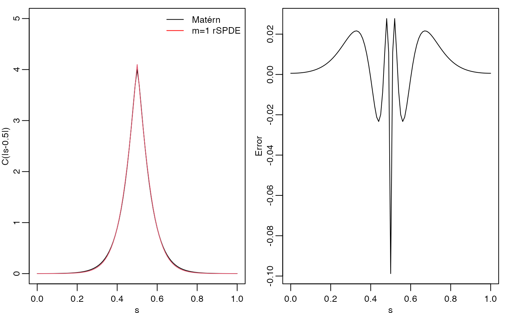
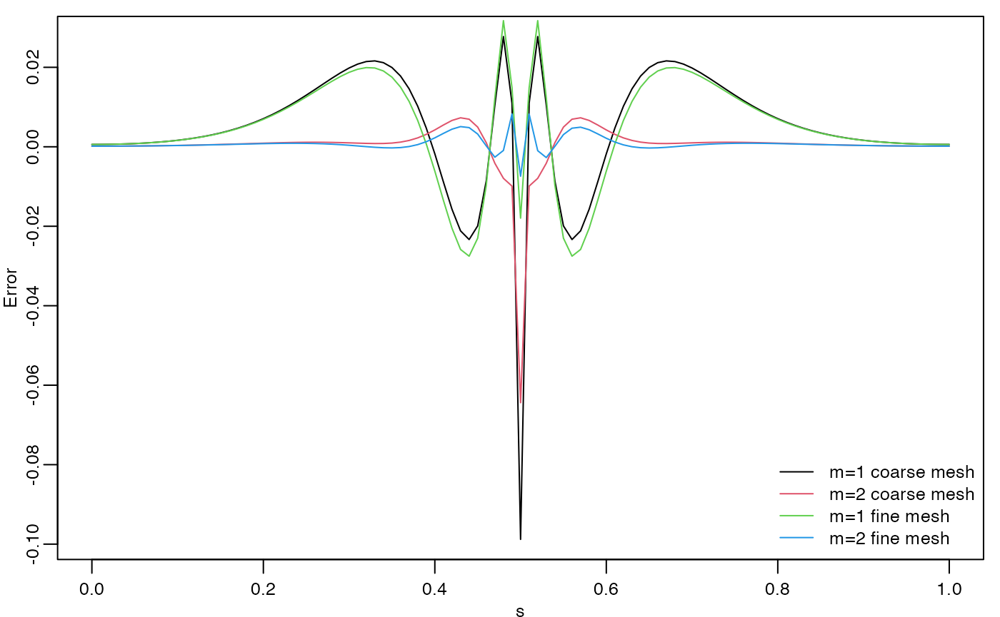

Using the rational approximation with the rSPDE package
David Bolin
2021-12-04
Source:vignettes/rspde_base.Rmd
rspde_base.RmdIntroduction
Several popular Gaussian random field models can be represented as solutions to stochastic partial differential equations (SPDEs) of the form \[ L^{\beta} (\tau u) = \mathcal{W}. \]
Here \(\mathcal{W}\) is Gaussian white noise, \(L\) is a second-order differential operator, the fractional power \(\beta>0\) determines the smoothness of \(u\), and \(\tau>0\) scales the variance of \(u\). The simplest example is a model on \(\mathbb{R}^d\) with \(L = \kappa^2 - \Delta\), which results in a Gaussian random field \(u\) with a Matérn covariance function \[ C(h) = \frac{\sigma^2}{2^{\nu-1}\Gamma(\nu)}(\kappa h)^\nu K_\nu(\kappa h). \] If \(2\beta\) is an integer and if the domain \(\mathcal{D}\) where the model is defined is bounded, then \(u\) can be approximated by a Gaussian Markov random field (GMRF) \(\boldsymbol{\mathrm{u}}\) via a finite element method (FEM) for the SPDE. Specifically, the approximation can be written as \[ u_h(s) = \sum_{i=1}^n u_i \varphi_i(s). \] Here \(\{\varphi_i\}\) are piecewise linear basis functions defined by some triangulation of \(\mathcal{D}\) and the vector of weights \(\boldsymbol{\mathrm{u}} = (u_1,\ldots,u_n)^T\) is normally distributed, \(N(\boldsymbol{\mathrm{u}},\tilde{\boldsymbol{\mathrm{Q}}}^{-1})\), where \(\tilde{\boldsymbol{\mathrm{Q}}}\) is sparse. See (Lindgren, Rue, and Lindström 2011) for further details.
The rSPDE package provides corresponding computationally efficient approximations for the case when \(\beta\) is a general fractional power. The main idea is to combine the FEM approximation with a rational approximation of the fractional operator. The rational SPDE approach results in an approximation of the original SPDE which is of the form \(P_l x = P_r \mathcal{W}\), where \(P_l\) and \(P_r\) are non-fractional operators defined in terms of polynomials \(p_l\) and \(p_r\). The order of \(p_r\) is given by \(m\) and the order of \(p_l\) is \(m + m_{\beta}\) where \(m_{\beta}\) is the integer part of \(\beta\) if \(\beta>1\) and \(m_{\beta} = 1\) otherwise.
Combining the rational approximation of the operator with the FEM discretization yields an approximation \(u_h\) of \(u\) of the basis expansion form above. The difference to the non-fractional case is that the vector of stochastic weights now is \(\boldsymbol{\mathrm{u}} \sim N(\boldsymbol{\mathrm{0}},\boldsymbol{\mathrm{P}}_r\boldsymbol{\mathrm{Q}}^{-1}\boldsymbol{\mathrm{P}}_r^T)\) where \(\boldsymbol{\mathrm{Q}}\) and \(\boldsymbol{\mathrm{P}}_r\) are sparse matrices. Alternatively, \(\boldsymbol{\mathrm{u}}\) can be represented as \(\boldsymbol{\mathrm{u}} = \boldsymbol{\mathrm{P}}_r \boldsymbol{\mathrm{x}}\) where \(\boldsymbol{\mathrm{x}} \sim N(\boldsymbol{\mathrm{0}},\boldsymbol{\mathrm{Q}}^{-1})\), which means that the discrete approximation is a latent GMRF. This can be used for computationally efficient inference and simulation. See (Bolin and Kirchner 2020) for further details.
Using the package
The main purpose of the rSPDE package is to provide functions for creating the rational approximation, which means assembling the matrices \(\boldsymbol{\mathrm{Q}}\) and \(\boldsymbol{\mathrm{P}}_r\). There are three main functions for computing the rational approximation. The most general function is fractional.operators, which works for a wide class of models with a general differential operator \(L\). For the stationary Matérn case, where \(L = \kappa^2 - \Delta\), the function matern.operators provides a simplified model specification. For the generalized non-stationary Matérn model, defined through the SPDE \[
(\kappa(s)^2 - \Delta)^\beta (\tau(s)u(s)) = \mathcal{W},
\] the function spde.matern.operators can be used.
Once the approximation has been constructed, it can be included manually in statistical models just as for the non-fractional case. The package has some built-in functions for basic use of the approximation, such as simulate which can be applied for simulation of the field. There are also functions for likelihood evaluation and kriging prediction for geostatistical models with Gaussian measurement noise where \(u\) is included. In the following sections, we will illustrate the usage of these functions.
Constructing the approximation
In this section, we explain how the different main functions can be used for constructing the rational approximation. The first step for constructing the rational SPDE approximation is to define the FEM mesh. For illustration purposes, the rSPDE package contains a simple FEM implementation for models on \(\mathbb{R}\) which we will use first. We will then illustrate how spatial models can be constructed, if the FEM implementation of the R-INLA package is used instead.
Assume that we want to define a model on the interval \([0,1]\). We then start by defining a vector with mesh nodes \(s_i\) where the basis functions \(\varphi_i\) are centered.
s <- seq(from = 0, to = 1, length.out = 101)Based on these nodes, we use the built-in function rSPDE.fem1d to assemble two matrices needed for creating the approximation of a basic Matérn model. These matrices are the mass matrix \(\boldsymbol{\mathrm{C}}\), with elements \(C_{ij} = \int \varphi_j(s) \varphi_i(s) ds\), and the stiffness matrix \(\boldsymbol{\mathrm{G}}\), with elements \(G_{ij} = \int \nabla\varphi_j(s) \cdot \nabla\varphi_i(s) ds\).
fem <- rSPDE.fem1d(s)We can now use matern.operators to construct a rational SPDE approximation of degree \(m=1\) for a Gaussian random field with a Matérn covariance function on the interval.
kappa <- 20
sigma <- 2
nu <- 0.8
op <- matern.operators(kappa = kappa, sigma = sigma, nu = nu,
G = fem$G, C = fem$C, d = 1, m = 1)The object op contains the matrices needed for evaluating the distribution of the stochastic weights \(\boldsymbol{\mathrm{u}}\). If we want to evaluate \(u_h(s)\) at some locations \(s_1,\ldots, s_n\), we need to multiply the weights with the basis functions \(\varphi_i(s)\) evaluated at the locations. For this, we can construct the observation matrix \(\boldsymbol{\mathrm{A}}\) with elements \(A_{ij} = \varphi_j(s_i)\), linking the FEM basis functions to the locations. This matrix can be constructed using the function rSPDE.A1d.
To evaluate the accuracy of the approximation, let us compute the covariance function between the process at \(s=0.5\) and all other locations in s and compare with the true Matérn covariance function. The covariances can be calculated as \[
\boldsymbol{\mathrm{A}} \boldsymbol{\mathrm{P}}_r \boldsymbol{\mathrm{Q}}^{-1}\boldsymbol{\mathrm{P}}_r^T\boldsymbol{\mathrm{v}}.
\] Here \(\boldsymbol{\mathrm{A}}\) is an identity matrix since we are evaluating the approximation in the nodes of the FEM mesh and \(\boldsymbol{\mathrm{v}}\) is a vector with all basis functions evaluated in \(s=0.5\).
v <- t(rSPDE.A1d(s,0.5))
c.approx <- op$Pr %*% solve(op$Q, op$Pr %*% v)
c.true <- matern.covariance(abs(s - 0.5), kappa, nu, sigma) The covariance function and the error compared with the Matérn covariance are shown in the following figure. 
To improve the approximation we can increase the degree of the polynomials, by increasing \(m\), and/or increase the number of basis functions used for the FEM approximation. Let us, for example, compute the approximation with \(m=2\) using the same mesh, as well as the approximation when we increase the number of basis functions and use \(m=1\) and \(m=2\).
op2 <- matern.operators(kappa = kappa, sigma = sigma, nu = nu,
G = fem$G, C = fem$C, d = 1, m = 2)
c.approx2 <- op2$Pr %*% solve(op2$Q, op2$Pr %*% v)
s2 <- seq(from = 0, to = 1, length.out = 501)
fem2 <- rSPDE.fem1d(s2)
op <- matern.operators(kappa = kappa, sigma = sigma, nu = nu,
G = fem2$G, C = fem2$C, d = 1, m=1)
A <- rSPDE.A1d(s2,s)
v <- t(rSPDE.A1d(s2,0.5))
c.approx3 <- A%*%op$Pr %*% solve(op$Q, op$Pr %*% v)
op <- matern.operators(kappa = kappa, sigma = sigma, nu = nu,
G = fem2$G, C = fem2$C, d = 1, m=2)
c.approx4 <- A%*%op$Pr %*% solve(op$Q, op$Pr %*% v)The resulting errors are shown in the following figure.

Since the error induced by the rational approximation decreases exponentially in \(m\), there is in general rarely a need for an approximation with a large value of \(m\). This is good because the number of non-zero elements in \(\boldsymbol{\mathrm{P}}_r\) and \(\boldsymbol{\mathrm{Q}}\) increases with \(m\), which makes the approximation more computationally costly to use. Further, the condition number of \(\boldsymbol{\mathrm{P}}_r\) and \(\boldsymbol{\mathrm{Q}}\) increases with \(m\), which can cause numerical problems when working with these matrices. To illustrate this, let us compute the norm of the approximation error for different \(m\).
errors <- rep(0,4)
for(i in 1:4){
op <- matern.operators(kappa = kappa, sigma = sigma, nu = nu,
G = fem2$G, C = fem2$C, d = 1, m = i)
c.app <- A%*%op$Pr %*% solve(op$Q, op$Pr %*% v)
errors[i] <- norm(c.true-c.app)
}
print(errors)
#> [1] 1.0068624 0.1080323 52.4789665 54.6447496We see that the error decreases when increasing \(m\) from \(1\) to \(2\), but is very large for \(m=3\) and \(m=4\). The reason for this is not that the approximation is bad, but that the numerical accuracy of the product \(\boldsymbol{\mathrm{P}}_r\boldsymbol{\mathrm{Q}}^{-1}\boldsymbol{\mathrm{P}}_rv\) is low due to the high condition numbers of the matrices. To solve this issue, the package contains functions for performing operations such as \(\boldsymbol{\mathrm{P}}_rv\) or \(\boldsymbol{\mathrm{P}}_r^{-1}v\) that takes advantage of the structure of \(\boldsymbol{\mathrm{P}}_r\) to avoid numerical issues. A complete list of these function can be seen by typing ?operator.operations. One of these functions is Sigma.mult, which performs the multiplication \(\boldsymbol{\mathrm{P}}_r\boldsymbol{\mathrm{Q}}^{-1}\boldsymbol{\mathrm{P}}_rv\) in a more numerically stable way. Let us use this function to compute the errors of the approximations again to see that we indeed get better approximations as \(m\) increases.
errors2 <- rep(0,4)
for(i in 1:4){
op <- matern.operators(kappa = kappa, sigma = sigma, nu = nu,
G = fem2$G, C = fem2$C, d = 1, m = i)
c.app <- A%*%Sigma.mult(op, v)
errors2[i] <- norm(c.true-c.app)
}
print(errors2)
#> [1] 1.00686123 0.10297336 0.02812262 0.02279198A non-stationary model
Let us now examine a non-stationary model \((\kappa(s)^2 - \Delta)^\beta (\tau(s)u(s)) = \mathcal{W}\) with \(\kappa(s) = 10(1+2s^2)\) and \(\tau(s) = 0.1(1 - 0.7s^2)\). We can then use spde.matern.operators to create the rational approximation with \(m=1\) as follows.
s <- seq(from = 0, to = 1, length.out = 501)
fem <- rSPDE.fem1d(s)
kappa <- 10*(1+2*s^2)
tau <- 0.1*(1 - 0.7*s^2)
op <- spde.matern.operators(kappa = kappa, tau = tau, nu = nu,
G = fem$G, C = fem$C, d = 1, m=1)Let us compute the covariance function \(C(s,s_i)\) of the non-stationary model for the locations \(s_1=0.1, s_2 = 0.5,\) and \(s_3 = 0.9\).
v <- t(rSPDE.A1d(s, c(0.1,0.5,0.9)))
covs <- Sigma.mult(op, v)The three covariances are shown in the following figure.
We see that this choice of \(\kappa(s)\) and \(\tau(s)\) results in a model with longer range for small values of \(s\) and smaller variance in the middle of the domain. We can also apply the general function fractional.operators to construct the approximation. This function requires that one supplies a discretization of the non-fractional operator \(L\), as well as a scaling factor \(c>0\) which is a lower bound for the smallest eigenvalue of \(L\). In our case we have \(L = \kappa(s)^2 - \Delta\), and the eigenvalues of this operator is bounded from below by \(c = \min_s \kappa(s)^2\). We compute this constant and the discrete operator.
Another difference between fractional.operators and the previous functions for constructing the approximation, is that it requires specifying \(\beta\) instead of the smoothness parameter \(\nu\) for the Matérn covariance. These two parameters are related as \(2\beta = \nu + d/2\).
op <- fractional.operators(L = L, beta = (nu + 1/2)/2, C = fem$C,
scale.factor = c, tau = tau, m = 1)Let’s make sure that we have the same approximation by comparing the previously computed covariances.
covs2 <- Sigma.mult(op,v)
norm(covs-covs2)
#> [1] 0Obviously, it is simpler to use spde.matern.operators in this case, but the advantage with fractional.operators is that it also can be used for other more general models such as one with \(L = \kappa(s)^2 - \nabla \cdot (\boldsymbol{\mathrm{H}}(s) \nabla)\) for some matrix-valued function \(\boldsymbol{\mathrm{H}}(s)\).
Using the approximation
For any approximation, constructed using the functions fractional.operators, matern.operators, or spde.matern.operators, we can simulate from the model using simulate.
u <- simulate(op)There is also built-in support for kriging prediction. To illustrate this, we use the simulation to create some noisy observations of the process. For this, we first construct the observation matrix linking the FEM basis functions to the locations where we want to simulate. We first randomly generate some observation locations and then construct the matrix.
We now generate the observations as \(Y_i = u(s_i) + \varepsilon_i\), where \(\varepsilon_i \sim N(0,\sigma_e^2)\) is Gaussian measurement noise.
Finally, we compute the kriging prediction of the process \(u\) at the locations in s based on these observations. To specify which locations that should be predicted, the argument Aprd is used. This argument should be an observation matrix that links the mesh locations to the prediction locations.
The process simulation, the observed data, and the kriging prediction are shown in the following figure.

Spatial data and parameter estimation
The functions used in the previous examples also work for spatial models. We then need to construct a mesh over the domain of interest and then compute the matrices needed to define the operator. These tasks can be performed, for example, using the R-INLA package. Let us start by defining a mesh over \([0,1]\times [0, 1]\) and compute the mass and stiffness matrices for that mesh.
x <- seq(from = 0, to = 10, length.out = 70)
mesh <- inla.mesh.create(lattice = inla.mesh.lattice(x = x, y = x),
extend = FALSE, refine = FALSE)
fem <- inla.fmesher.smorg(mesh$loc, mesh$graph$tv, fem = 2,
output = list("c0", "c1", "g1"))
C <- fem$c0
G <- fem$g1We can now use these matrices to define a rational SPDE approximation of degree \(m=1\) for a Matérn model in the same was as before. We use \(\nu=0.5\) so that the model has an exponential covariance function.
kappa <- 0.5
tau <- 1
nu <- 0.5
op <- spde.matern.operators(kappa = kappa, tau = tau, nu = nu, G = G, C = C, d = 2, m = 1)Now let us simulate some noisy data that we will use to estimate the parameters of the model. To construct the observation matrix, we use the R-INLA function inla.spde.make.A.
u <- simulate(op)
n.obs <- 4000
obs.loc <- cbind(runif(n = n.obs, min = 0, max = 1), runif(n = n.obs, min = 0, max = 1))
A <- inla.spde.make.A(mesh, loc = obs.loc)
sigma.<- 0.1
Y = as.vector(A %*% u + sigma.e*rnorm(n.obs))The simulated random field as well as the observation locations are shown in the following figure. 
For each type of rational approximation of degree \(m\), there is a corresponding likelihood function that can be used for likelihood-based parameter estimation. Since we constructed the model with matern.operators, we can use the function matern.loglike to define the likelihood. To simplify parameter estimation, we create an objective function to maximize which is the negative log-likelihood, parametrized using the logarithm of each parameter to avoid constrained optimization.
mlik <- function(theta, Y, G, C, A) {
return(-spde.matern.loglike(exp(theta[1]), exp(theta[2]), exp(theta[3]), exp(theta[4]),
Y = Y, G = G, C = C, A = A, d = 2, m=1))
}We can now estimate the parameter using optim.
theta0 = log(c(2, sqrt(var(Y)), 1,0.1*sqrt(var(Y))))
pars <- optim(theta0, mlik, Y = Y, G = G, C = C, A = A, method = "L-BFGS-B")
results <- data.frame(kappa = c(kappa, exp(pars$par[1])),
tau = c(tau, exp(pars$par[2])),
nu = c(nu, exp(pars$par[3])),
sigma.e = c(sigma.e, exp(pars$par[4])),
row.names = c("True", "Estimate"))
print(results)
#> kappa tau nu sigma.e
#> True 0.5000000 1.000000 0.5000000 0.3000000
#> Estimate 0.5531397 1.133612 0.4944743 0.2953928References
Bolin, David, and Kristin Kirchner. 2020. “The Rational SPDE Approach for Gaussian Random Fields with General Smoothness.” Journal of Computational and Graphical Statistics 29 (2): 274–85.
Lindgren, Finn, Håvard Rue, and Johan Lindström. 2011. “An Explicit Link Between Gaussian Fields and Gaussian Markov Random Fields: The Stochastic Partial Differential Equation Approach.” Journal of the Royal Statistical Society. Series B. Statistical Methodology 73 (4): 423–98.